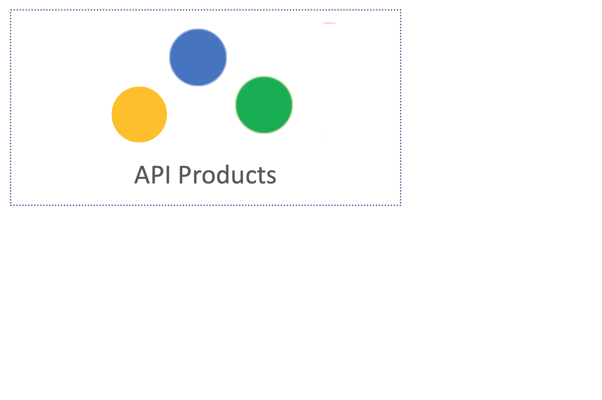
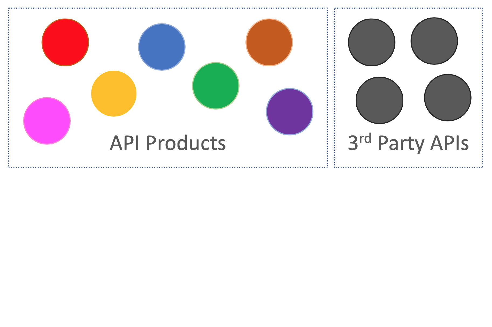
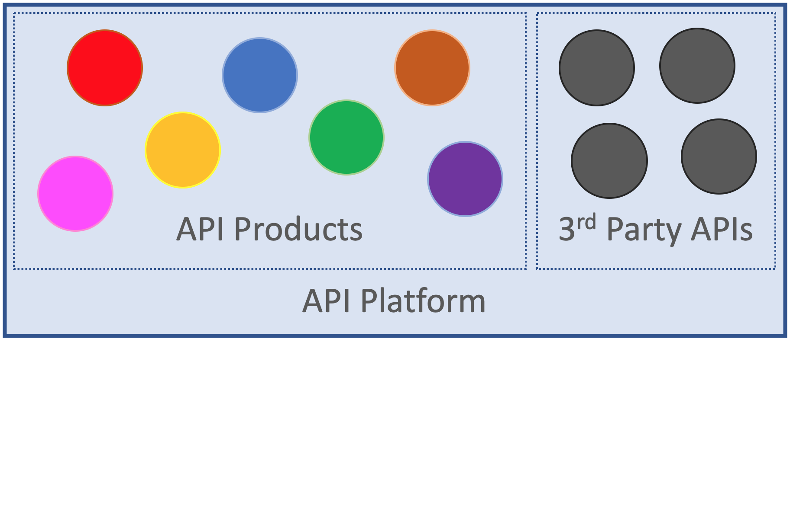
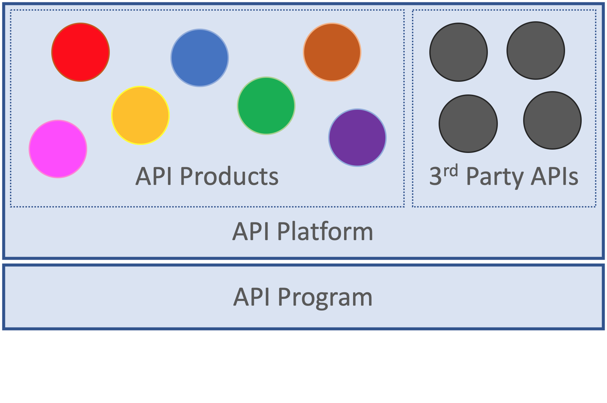
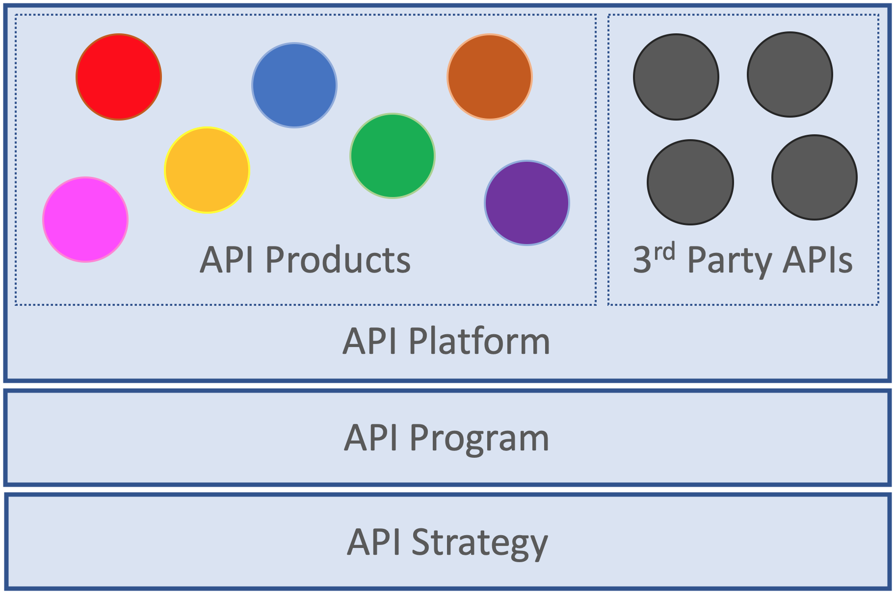
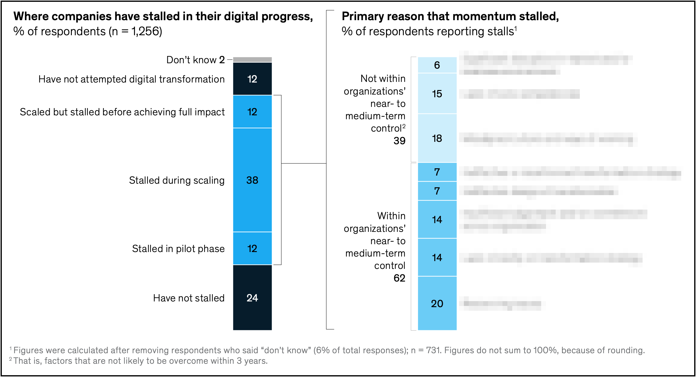

Typical API Journey
(22) From Experimentation to Scaling
- Trying to increase speed by decreasing coupling: Initial APIs
- Increasing number of APIs and increasing use of 3rd party APIs
- Fear and loathing because optimizing decentralized landscapes works differently
- Programs emerge that help teams and introduce governance structures
- Strategies are defined that provide directions and set goals
(23) Getting Started with APIs

(24) Growing API Usage

(25) Products Become Platforms

(26) Programs Steer Platforms

(27) Strategies Guide Programs

(28) Getting started is hard, scaling up is even harder
